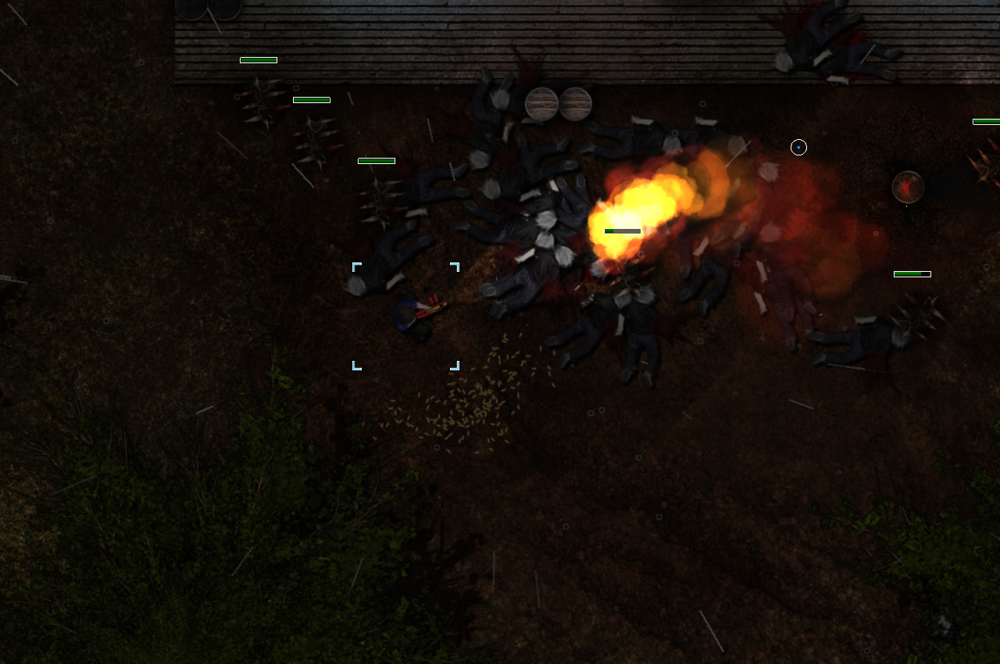

<section id="projects">
  <div class="width-limiter">
    <h2>03. Projects</h2>
    <h1>Projects</h1>
    <div class="projects">
      <div class="project">
        <!-- Project Links -->
        <div class="project-header">
          <a href="https://loganfairbairn.itch.io/dead-pulse" target="_blank">
            <i class="fab fa-itch-io fa-2x"></i>
          </a>

          <h3 class="project-title">Dead Pulse</h3>
        </div>

        <!-- Project Image -->
        <div class="project-image">
          
        </div>

        <!-- Project Description -->
        <div class="project-description">
          <p>
            A strategic top down zombie wave survival game. Set up defences
            against hordes of undead, use a variety of unique weapons, traps,
            barricades, and turrets to survive for as long as possible.
          </p>
        </div>

        <!-- Project Tags -->
        <div class="project-tags">
          <h5>Built with</h5>
          <ul>
            <li class="tag">Game Maker Studio</li>
            <li class="tag">Photoshop</li>
            <li class="tag">Audacity</li>
          </ul>
        </div>
      </div>
    </div>
  </div>
</section>
